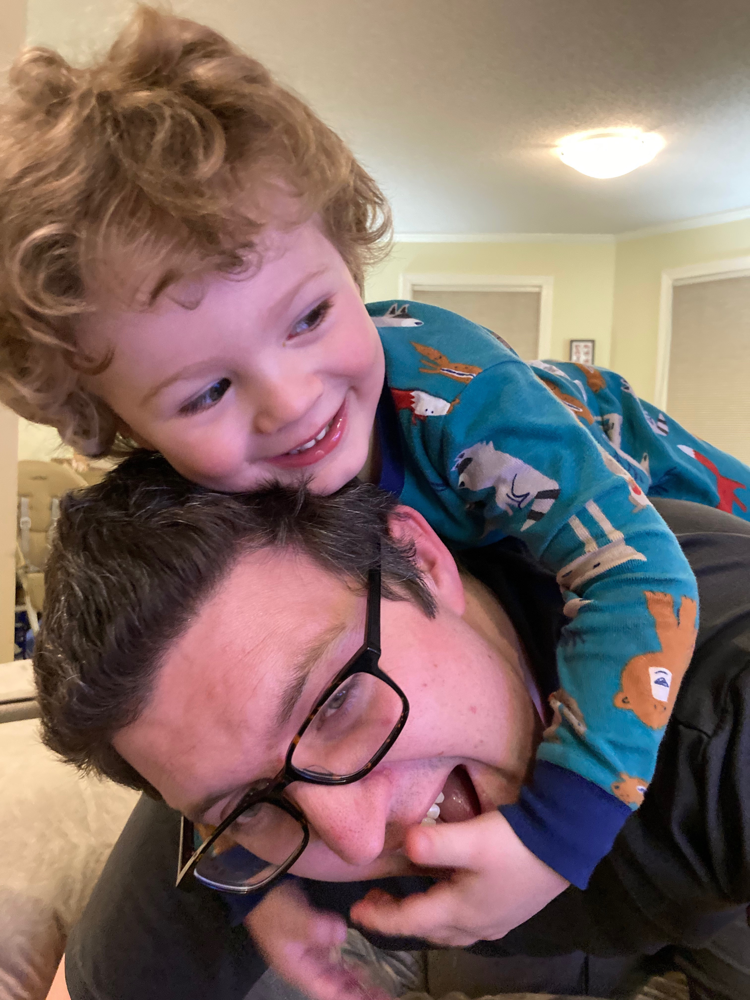

Taylor Dupuy
Associate Professor
Spending the 2025–2026 academic year at the
GAATI Laboratory .
Office: Innovation E439.
Before UVM I was a postdoc of
Ehud Hrushovski ,
and a student of Alexandru Buium .
My work tends to revolve around
Diophantine equations ,
differential algebraic geometry ,
deformation theory ,
Witt vectors
and the
Frobenius ,
absolute geometry ,
applied model theory ,
and abelian varieties .
I'm happy to talk to anyone about any kind of math; send me an email.
CV
· Papers & notes
· Talks
· Teaching
· YouTube
Seminars
For students
Past conferences I've organized
Arithmetic Geometry , AMS Western Sectional, Albuquerque, 2021.Witt Vectors, Deformations and Absolute Geometry , Burlington, Summer 2018.Super QVNTS workshop on Anabelian Geometry and Kummer Classes , Burlington, Fall 2016.Special Session on Differential and Functional Equations , JMM, Atlanta, 2016.Arithmetic and Algebraic Differentiation , Berkeley, Summer 2015.Arithmetic and Differential Algebraic Geometry , AMS Western Sectional, Albuquerque, 2014.Witt Vectors, Lifting and Descent , JMM, San Diego, 2014 — slides .
Here is a list of past Witt vector conferences. . I was part of the MSRI (SLMath) semester program on Model Theory, Arithmetic Geometry and Number Theory in Spring 2014.
Links
Regular conferences
Conference lists
Organizations
Notes collections
Computational
Forums & comics
 Supported by the National Science Foundation, DMS-2401570.
Opinions, findings, and conclusions or recommendations expressed are those of the author and do not necessarily reflect the views of the National Science Foundation or the University of Vermont.
Supported by the National Science Foundation, DMS-2401570.
Opinions, findings, and conclusions or recommendations expressed are those of the author and do not necessarily reflect the views of the National Science Foundation or the University of Vermont.